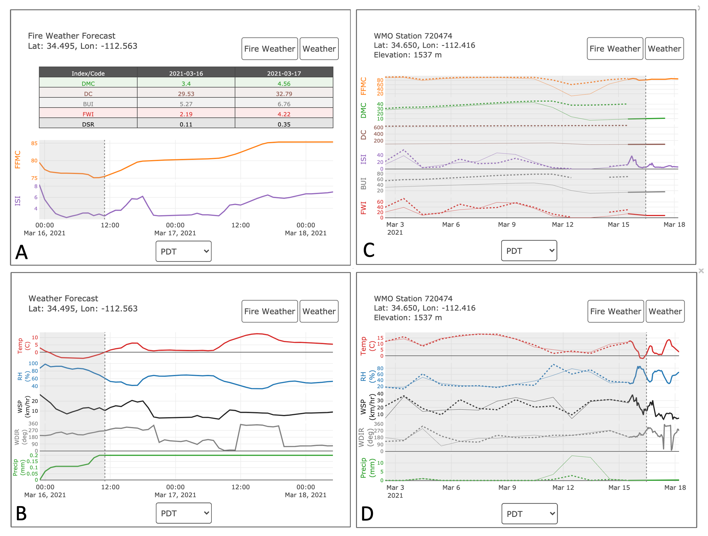

Website¶
User Guide¶
{kind=link}
- Meteogram forecasts of:
FWI values
Associated meteorology
Station-located two-week comparison of observed vs. forecasted FWI values
Associated meteorology. Solid lines represent forecasts and dashed lines represent observed values.
A and B can be activated by a double-click on a Desktop computer and single-click on mobile.
C and D can be activated by selecting the “weather station” layer in the main drop-down menu and clicking on a weather station of interest.
Visualization Steps¶
Below are the steps to visualizing the data on a leaflet map. The data starts in python as a zarr file and is converted to a workable leafletjs formate.
- Python’s matplotlib is used to create
countourfof each forecast product. reference: https://matplotlib.org/3.1.1/api/_as_gen/matplotlib.pyplot.contourf.html
fwf/json/colormaps.jsoncontains the color schemes, the defined contour levels, and the max/min for eachcontourfplot.
- Python’s matplotlib is used to create
- From here
geojsoncontouris used to convert thecountourfplot to ageojsonfile. The utility that does this is in within
fwf/utils/geoutils.mycontourf_to_geojsonHere is a snippet of the code
Cnorm = matplotlib.colors.Normalize(vmin= vmin, vmax =vmax+1) contourf = plt.contourf(lngs, lats, fillarray, levels = levels, \ linestyles = 'None', norm = Cnorm, colors = colors, extend = 'both') plt.close() geojsoncontour.contourf_to_geojson( contourf=contourf, min_angle_deg=None, ndigits=2, stroke_width=None, fill_opacity=None, geojson_properties=None, unit='', geojson_filepath = f'/fwf/data/geojson/{folderdate}/{geojson_filepath}.geojson')
- From here
- Now that the data is in a
geojsonformat it could be added to a leaflet map using a variety of different leaflet extensions. However, the file size is a bit large, at this stage ~ 8 Mb. To help reduce the file sizegeojsonsare converted totopojsonsusinggeo2topo If you quantize the
geojosnto atopojsonyou save a lot on file sizeI found if you use a quantization count (
q) of 1e4, will reduce thegeojsonfile by nearly an order of magnitude and doesn’t take away from the quality of the visualization on leafletreference: https://github.com/topojson/topojson-server
Execute geo2topo quantization on comand line
geo2topo -q 1e4 path_to_infile/file_YYYYMMDDHH.geojson > path_to_outfile/file_YYYYMMDDHH.json
- Now that the data is in a
- Now that the data is in a
topojsonsits added to leaflet usingLeaflet.VectorGrid.Slicer API: https://leaflet.github.io/Leaflet.VectorGrid/vectorgrid-api-docs.html
An example js code block snippet
fetch(url, {cache: "default"}).then(function(response){ return response.json(); }).then(function(json){ newLayer.addLayer(L.vectorGrid.slicer( json, { minZoom: 2, maxZoom: 18, rendererFactory: L.canvas.tile, vectorTileLayerStyles:{ 'FFMC': geo_json_styler18 } } ).setZIndex(500) ) })};
- Now that the data is in a